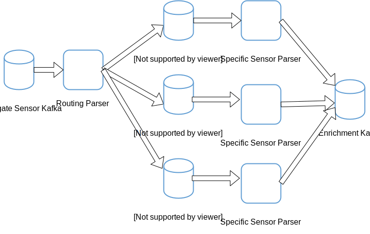

Problem Statement
Aggregating many different types sensors into a single data source (e.g. syslog) and ingesting that aggregate sensor into Metron is a common pattern. It is not obvious precisely how to manage these types of aggregate sensors as they require two-pass parsing. This document will walk through an example of supporting this kind of multi-pass ingest.
Multi-pass parser involves the following requirements:
- The enveloping parser (e.g. the aggregation format such as syslog or plain CSV) may contain metadata which should be ingested along with the data.
- The enveloping sensor contains many different sensor types
High Level Solution

At a high level, we continue to maintain the architectural invariant of a 1-1 relationship between logical sensors and storm topologies. Eventually this relationship may become more complex, but at the moment the approach is to construct a routing parser which will have two responsibilities:
- Parse the envelope (e.g. syslog data) and extract any metadata fields from the envelope to pass along
- Route the unfolded data to the appropriate kafka topic associated with the enveloped sensor data
Because the data emitted from the routing parser is just like any data emitted from any other parser, in that it is a JSON blob like any data emitted from any parser, we will need to adjust the downstream parsers to extract the enveloped data from the JSON blob and treat it as the data to parse.
Example
Preliminaries
We assume that the following environment variables are set:
- METRON_HOME - the home directory for metron
- ZOOKEEPER - The zookeeper quorum (comma separated with port specified: e.g. node1:2181 for full-dev)
- BROKERLIST - The Kafka broker list (comma separated with port specified: e.g. node1:6667 for full-dev)
- ES_HOST - The elasticsearch master (and port) e.g. node1:9200 for full-dev.
Before editing configurations, be sure to pull the configs from zookeeper locally via
$METRON_HOME/bin/zk_load_configs.sh --mode PULL -z $ZOOKEEPER -o $METRON_HOME/config/zookeeper/ -f
The Scenario
Consider the following situation, we have some logs from a Cisco PIX device that we would like to ingest. The format is syslog, but multiple scenarios exist in the same log file. Specificaly, let’s consider the sample logs here.
The log lines in general have the following components:
- A timestamp
- A message type tag
- The message payload that is dependent upon the tag
Let’s consider two types of messages that we’d like to parse:
- Tag 6-302* which are connection creation and teardown messages e.g. Built UDP connection for faddr 198.207.223.240/53337 gaddr 10.0.0.187/53 laddr 192.168.0.2/53
- Tag 5-304* which are URL access events e.g. 192.168.0.2 Accessed URL 66.102.9.99:/
A couple things are apparent from this:
- The formats we care about are easy to represent in grok, but are very different and logically represent very different sensors.
- The syslog loglines output by this device has many types of events that I do not care about (yet).
We will proceed to create 3 separate parsers:
- A pix_syslog_router parser which will:
- Parse the timestamp field
- Parse the payload into a field called data
- Parse the tag into a field called pix_type
- Route the enveloped messages to the appropriate kafka topic based on the tag
- A cisco-6-302 and cisco-5-304 parser which will append to the existing fields from the pix_syslog_router the sensor specific fields based on the tag type.
Cisco PIX Grok Patterns
In order to assist in these parsers, we’re going to accumulate some grok expressions which will help us deal with these various parsers.
- Open a file ~/cisco_patterns and place the following in there
CISCO_ACTION Built|Teardown|Deny|Denied|denied|requested|permitted|denied by ACL|discarded|est-allowed|Dropping|created|deleted
CISCO_REASON Duplicate TCP SYN|Failed to locate egress interface|Invalid transport field|No matching connection|DNS Response|DNS Query|(?:%{WORD}\s*)*
CISCO_DIRECTION Inbound|inbound|Outbound|outbound
CISCOFW302020_302021 %{CISCO_ACTION:action}(?:%{CISCO_DIRECTION:direction})? %{WORD:protocol} connection %{GREEDYDATA:ignore} faddr %{IP:ip_dst_addr}/%{INT:icmp_seq_num}(?:\(%{DATA:fwuser}\))? gaddr %{IP:ip_src_xlated}/%{INT:icmp_code_xlated} laddr %{IP:ip_src_addr}/%{INT:icmp_code}( \(%{DATA:user}\))?
ACCESSED %{URIHOST:ip_src_addr} Accessed URL %{IP:ip_dst_addr}:%{URIPATHPARAM:uri_path}
CISCO_PIX %{GREEDYDATA:timestamp}: %PIX-%{NOTSPACE:pix_type}: %{GREEDYDATA:data}
- Place this pattern in HDFS at /tmp/cisco_patterns via hadoop fs -put ~/cisco_patterns /tmp
- NOTE: In production, we’d have more battle hardened patterns as well as place them in a more sensible location.
The pix_syslog_router Parser
- Create the pix_syslog_router kafka topic via:
/usr/hdp/current/kafka-broker/bin/kafka-topics.sh --zookeeper $ZOOKEEPER --create --topic pix_syslog_router --partitions 1 --replication-factor 1
- Create the pix_syslog_router parser by opening $METRON_HOME/config/zookeeper/parsers/pix_syslog_router.json and placing the following:
{
"parserClassName" : "org.apache.metron.parsers.GrokParser"
,"sensorTopic" : "pix_syslog_router"
, "parserConfig": {
"grokPath": "/tmp/cisco_patterns",
"batchSize" : 1,
"patternLabel": "CISCO_PIX",
"timestampField": "timestamp",
"timeFields" : [ "timestamp" ],
"dateFormat" : "MMM dd yyyy HH:mm:ss",
"kafka.topicField" : "logical_source_type"
}
,"fieldTransformations" : [
{
"transformation" : "REGEX_SELECT"
,"input" : "pix_type"
,"output" : "logical_source_type"
,"config" : {
"cisco-6-302" : "^6-302.*",
"cisco-5-304" : "^5-304.*"
}
}
]
}
A couple of things to note about this config:
- In the parserConfig section, note that we are specifying kafka.topicField is logical_source_field. This specifies that the parser will send messages to the topic specified in the logical_source_type field. If the field does not exist, then the message is not sent.
- The REGEX_SELECT field transformation sets the logical_source_type field based on the value in the pix_type field, which recall is our tag. This will enable us to route the broad category of cisco firewall messages along to the specific parser.
The cisco-6-302 Parser
- Create the cisco-6-302 kafka topic via:
/usr/hdp/current/kafka-broker/bin/kafka-topics.sh --zookeeper $ZOOKEEPER --create --topic cisco-6-302 --partitions 1 --replication-factor 1
- Create the cisco-6-302 parser by opening $METRON_HOME/config/zookeeper/parsers/cisco-6-302.json and placing the following:
{
"parserClassName" : "org.apache.metron.parsers.GrokParser"
,"sensorTopic" : "cisco-6-302"
,"rawMessageStrategy" : "ENVELOPE"
,"rawMessageStrategyConfig" : {
"messageField" : "data",
"metadataPrefix" : ""
}
, "parserConfig": {
"grokPath": "/tmp/cisco_patterns",
"batchSize" : 1,
"patternLabel": "CISCOFW302020_302021"
}
}
Note a couple of things:
- We are specifying the rawMessageStrategy to be ENVELOPE to indicate that it is not a straight data feed, but rather it’s enveloped in a JSON map (i.e. the output of the `pix_syslog_router)
- Because this is enveloped, we must specify the field which contains the actual raw data by setting messageField in rawMessageStrategyConfig
- You may be wondering why we specify metadataPrefix to be empty string. We want some of the fields in the enveloped message to be merged in without prefix. Most specifically, we want the timestamp field. By default, the prefix is metron.metadata.
The cisco-5-304 Parser
- Create the cisco-5-304 kafka topic via:
/usr/hdp/current/kafka-broker/bin/kafka-topics.sh --zookeeper $ZOOKEEPER --create --topic cisco-5-304 --partitions 1 --replication-factor 1
- Create the cisco-5-304 parser by opening $METRON_HOME/config/zookeeper/parsers/cisco-5-304.json and placing the following:
{
"parserClassName" : "org.apache.metron.parsers.GrokParser"
,"sensorTopic" : "cisco-5-304"
,"rawMessageStrategy" : "ENVELOPE"
,"rawMessageStrategyConfig" : {
"messageField" : "data",
"metadataPrefix" : ""
}
, "parserConfig": {
"grokPath": "/tmp/cisco_patterns",
"batchSize" : 1,
"patternLabel": "ACCESSED"
}
}
Mostly the same comments from the previous parser apply here; we are just using a different pattern label.
Start the Parsers
Now we should start the parsers
- Push the configs that we’ve created for the 3 parsers:
$METRON_HOME/bin/zk_load_configs.sh --mode PUSH -z $ZOOKEEPER -i $METRON_HOME/config/zookeeper/
- Start the cisco-6-302 parser via
$METRON_HOME/bin/start_parser_topology.sh -k $BROKERLIST -z $ZOOKEEPER -s cisco-6-302
- Start the cisco-5-304 parser via
$METRON_HOME/bin/start_parser_topology.sh -k $BROKERLIST -z $ZOOKEEPER -s cisco-5-304
- Start the pix_syslog_router parser via
$METRON_HOME/bin/start_parser_topology.sh -k $BROKERLIST -z $ZOOKEEPER -s pix_syslog_router
Send Data
- Create a file called ~/data.log with the sample syslog loglines here.
- Send the data in via kafka console producer
cat ~/data.log | /usr/hdp/current/kafka-broker/bin/kafka-console-producer.sh --broker-list $BROKERLIST --topic pix_syslog_router
You should see indices created for the cisco-5-304 and cisco-6-302 data with appropriate fields created for each type.
Aggregated Parsers with Parser Chaining
Chained parsers can be run as aggregated parsers. These parsers continue to use the sensor specific Kafka topics, and do not do internal routing to the appropriate sensor.
Instead of creating a topology per sensor, all 3 (pix-syslog-parser, cisco-5-304, and cisco-6-302) can be run in a single aggregated parser. It’s also possible to aggregate a subset of these parsers (e.g. run cisco-6-302 as it’s own topology, and aggregate the other 2).
The step to start parsers then becomes
$METRON_HOME/bin/start_parser_topology.sh -k $BROKERLIST -z $ZOOKEEPER -s cisco-6-302,cisco-5-304,pix_syslog_router
The flow through the Storm topology and Kafka topics: